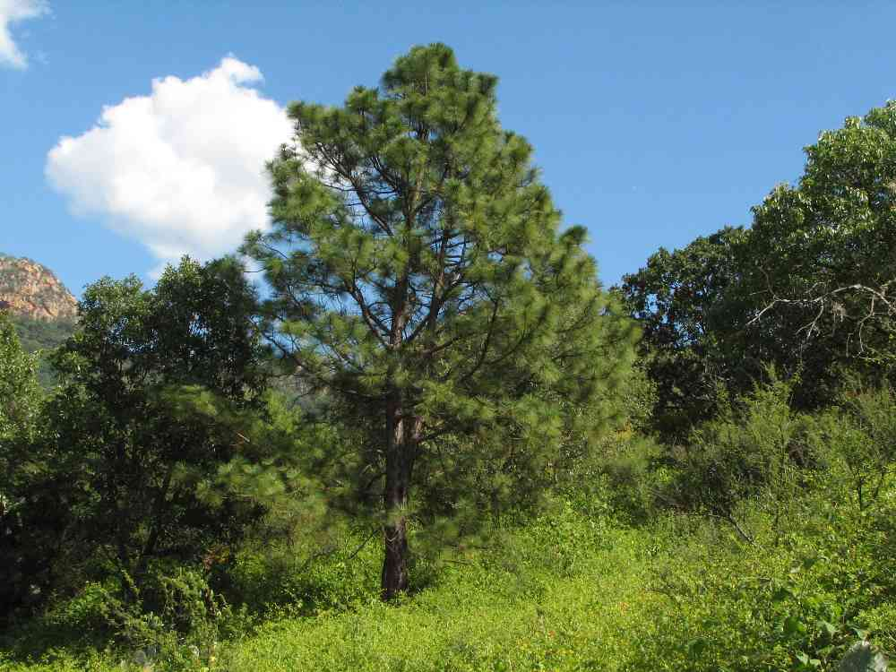

Guatemala

La conquista de Guatemala fue llevada a cabo por Pedro de Alvarado, enviado de México por Cortés a fines de 1523. El 25 de julio de 1524 fundó la ciudad de Santiago de los Caballeros de Guatemala, que fue trasladada a su ubicación actual en 1527. La Capitanía General de Guatemala estaba formada por las alcaldías de Chiapas y San Salvador, las provincias de Guatemala, Honduras y Nicaragua y la Gobernación de Costa Rica. Esta organización se mantendría hasta la constitución de las intendencias en 1787. La imprenta entró en Guatemala en 1660 y la Universidad de San Carlos de Borromeo fue fundada en 1676.

La independencia de Guatemala se realizó pacíficamente. Cuando se supo que la intendencia de Chiapas se había unido a México, se declaró la independencia del país, el 15 de septiembre de 1821, y se redactó el acta de emancipación política de Centroamérica. El 22 de noviembre de 1924, Guatemala, El Salvador, Honduras, Costa Rica y Nicaragua sancionaron una Constitución que los unía en una fede- ración gobernada por un presidente, pero que dejaba amplia libertad al jefe de cada estado particular. Manuel José Arce fue el primer presidente de la Federación, y Juan Barrundia el primer jefe de Estado de Guatemala. La ciudad de Guatemala era a la vez la capital de la Federación y del Estado.
De inmediato se restableció el dominio de los monopolios extranjeros, se derogó la Constitución y la mayoría de las leyes revolucionarias. Se suprimió el voto del analfabeto, se paralizó la reforma agraria y se hicieron nuevas concesiones a las compañías extranjeras. Se inició entonces una sucesión de gobiernos militares o tutelados por estos. Las cuatro elecciones siguientes (1970, 1974, 1978 y 1982) fueron fraudulentas y favorecieron siempre a los candidatos de la cúpula castrense. En ese clima nació y se desarrolló el movimiento revolucionario armado. En 1962 surgieron las Fuerzas Armadas Rebeldes (FAR), en 1975 el Ejército Guerrillero de los Pobres (EGP), y en 1979 la Organización del Pueblo en Armas (ORPA).
Álvaro Arzú resultó electo presidente el 7 de enero de 1996. En diciembre de ese mismo año el nuevo gobierno y la guerrilla guatemalteca firmaron una serie de acuerdos de paz que pusieron fin a una guerra de varias décadas y que había costado alrededor de 100 mil vidas. El 14 de enero de 2000 Alfonso Portillo asumió la presidencia del país tras ganar las elecciones. Le siguió Oscar Berger, electo en enero de 2004. El 4 de noviembre de 2007, Álvaro Colom Caballeros se impuso a su adversario Otto Pérez Molina y es el actual presidente.
Ave nacional: El Quetzal

Flor nacional: Monja Blanca

Escudo nacional

Arbol nacional: La ceiba

Guatemala, un país de América Central al sur de México, tiene volcanes, bosques tropicales y antiguos sitios mayas. Su superficie es de 108,888 km²
Alta Verapaz
Baja Verapaz
Chimaltenango
Chiquimula
El Progreso
Escuintla
Guatemala
Huehuetenango
Izabal
Jalapa
Jutiapa
Petén
Quetzaltenango
Quiché
Retalhuleu
Sacatepéquez
San Marcos
Santa Rosa
Sololá
Suchitepéquez
Totonicapán
Zacapa
Tikal

Antigua guatemala

Lago atitlan

Petén